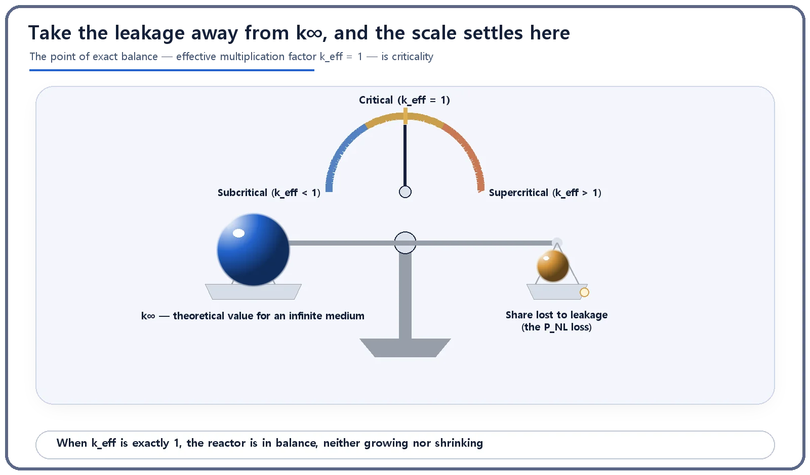

Neutron Physics & the Core · 084
We Put Walls Around the Endless Room — What the Effective Multiplication Factor (k-effective) Really Tells Us
Put walls around an infinite reactor and some neutrons slip out; the multiplication factor that counts that leakage decides whether a real reactor is critical.
The effective multiplication factor, k_eff, is how many times the neutron population multiplies per generation in a real reactor of finite size, where some neutrons leak out. It equals k∞ × P_NL, the infinite-medium value times the non-leakage probability, and k_eff = 1 is true criticality: the steady balance of a reactor in normal operation.
We put walls around the endless room
Imagine a room that stretches forever in every direction, with no walls, filled endlessly with nuclear fuel. In that room, however far a neutron flew, it could never get outside; the only contest was between neutrons being born and neutrons being absorbed. That imaginary room is where the infinite multiplication factor, k-infinity, lives.
A real reactor, though, cannot go without walls. However large it is, it ends somewhere, and beyond that end there is some other material or empty space. So let's put walls of a real size around the endless room. The moment the walls go up, it is no longer the same room.
The walls go up, and a few slip out through the gaps
Picture children running freely around a wide yard when suddenly a fence goes up. Most keep playing inside, but a few who were right by the fence climb over it or slip out through a gap in the gate. However tightly you build the fence, you can't stop it completely.
Neutrons in a reactor are the same. A neutron in the middle of the core (the central space that holds the nuclear fuel) is surrounded by fuel and has nowhere to escape, but a neutron near the edge can simply fly out of the core before it causes a fission or is absorbed. This escape across the core boundary is called leakage. In the endless room there was no boundary, so leakage didn't exist; the moment we put up walls, this new loss appeared.
Just one more multiplication on top of k∞
Capturing leakage in a number doesn't take a complicated calculation. Take the infinite multiplication factor (k∞, the value with no walls) and multiply it by one probability: the non-leakage probability, P_NL, the fraction of a generation's neutrons that stay inside the core instead of escaping. It lies between 0 and 1; with no walls and no leakage it would be 1, and k_eff would equal k∞ again.
k_eff = k∞ × P_NL
| Symbol | Meaning |
|---|---|
| k_eff | Effective multiplication factor: generation-to-generation multiplication in a real, finite core |
| k∞ | Infinite multiplication factor: the imaginary upper value assuming no leakage |
| P_NL | Non-leakage probability: chance that a neutron stays in the core without leaking (0 to 1) |
In reality P_NL is always less than 1, so k_eff is always less than or equal to k∞. The bigger the core, the smaller its surface area relative to its volume, so neutrons have relatively fewer chances to escape and P_NL gets closer to 1; the smaller the core, the noticeably smaller P_NL becomes. A reflector is a device for raising P_NL: it bounces escaping neutrons back from the core surface.
One number, and the three fates that 1 divides
In a real reactor, the true standard for judging "is it critical right now?" is always k_eff, never k∞. The endless-room value is a theoretical reference; whether neutrons are actually increasing or decreasing is told by k_eff, which accounts for leakage too.
| k_eff | State | What happens |
|---|---|---|
| = 1 | Critical | The neutron population stays exactly the same each generation: the steady state of a reactor at constant power. |
| < 1 | Subcritical | The population drops each generation and the reaction gradually dies down. |
| > 1 | Supercritical | The population grows each generation. By itself this is not an accident: when power is raised or lowered, a reactor deliberately passes through it very briefly and by a very small margin. |
Who keeps k_eff at 1? Control rods and boric acid. By inserting or withdrawing control rods and adjusting the boric acid concentration in the cooling water (in pressurized water reactors), operators finely tune how many neutrons are absorbed and hold k_eff at the desired value, usually exactly 1. Operating a reactor comes down, in large part, to keeping this one number pinned near 1.

A bigger k, more electricity?
It's easy to think the bigger k_eff is, the more powerful the reactor, or that k_eff measures efficiency or power output. Neither is true. k_eff is only the ratio by which the neutron population multiplies from one generation to the next. Every reactor in normal operation, whether a large 1-million-kilowatt-class power plant or a far smaller research reactor, runs near k_eff = 1. How much electricity a plant produces is set by factors such as the size of the core and the neutron flux; k_eff only tells you whether that state is growing, shrinking, or holding steady.
The takeaways
k_eff = k∞ × P_NL: the infinite-medium value multiplied by the non-leakage probability. Bigger cores leak relatively less, so k_eff approaches k∞; smaller cores show a bigger gap. k_eff = 1 is true criticality, the balance a reactor in normal operation maintains, and k_eff says nothing about efficiency or the size of the power output.